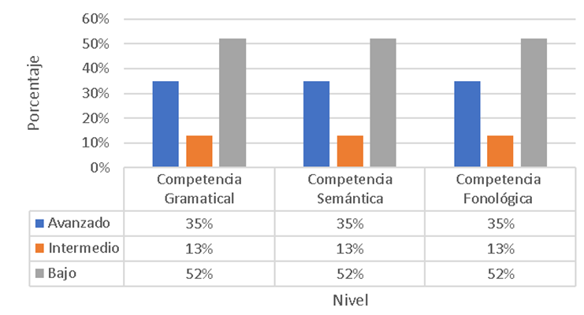
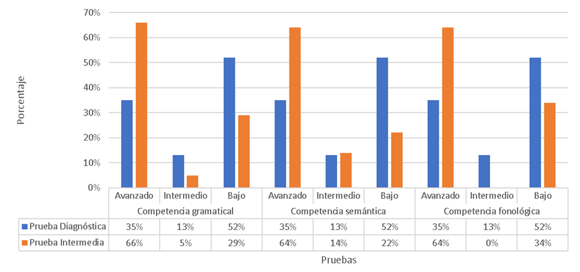
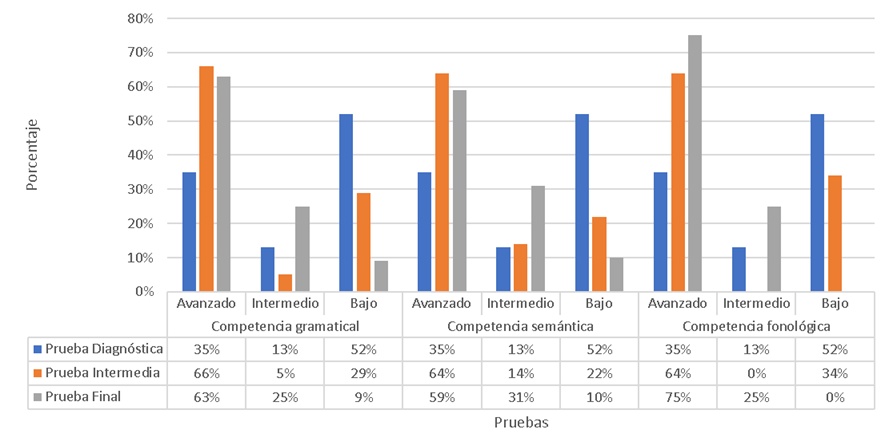

Estrategia lúdica para fortalecer la habilidad escrita en inglés en el grado cuarto uno
A playful strategy to strengthen English writing skills in fourth grade
El inglés es crucial a nivel global y en Colombia ha cobrado importancia con las políticas del Ministerio de Educación que buscan mejorar su aprendizaje. Sin embargo, los resultados de pruebas nacionales muestran que los estudiantes colombianos alcanzan niveles intermedios, destacando la escritura como su habilidad más débil. En la Escuela Normal Superior Oiba (ENSO), muchos estudiantes no alcanzan el nivel B1 en inglés al graduarse, y en primaria, las competencias aún no se desarrollan por completo, lo que afecta los objetivos de bilingüismo. Para abordar esta problemática, se implementó el juego como estrategia lúdica para fortalecer la habilidad escrita en estudiantes de cuarto grado. Asimismo, se empleó la investigación participativa, lo que permitió analizar la situación mediante diversas técnicas e instrumentos flexibles para la recolección de datos. Como resultado, se lograron avances significativos en la enseñanza y aprendizaje de la escritura en inglés, con un enfoque en las competencias gramatical, semántica y fonológica. Además, el juego resultó ser efectivo para crear un ambiente de aprendizaje divertido y competitivo, beneficiando también el desarrollo cognitivo, social y emocional de los estudiantes.
Palabras clave: investigación participativa, juego, lengua extranjera, escritura, inglés.
English is crucial globally and in Colombia it has gained importance with the policies of the Ministry of Education that seek to improve its learning. However, national test results show that Colombian students reach intermediate levels, with writing standing out as their weakest skill. At the Escuela Normal Superior Oiba (ENSO), many students do not reach B1 level in English upon graduation, and in primary school, competencies are still not fully developed, which affects bilingualism objectives. To address this problem, the game was implemented as a ludic strategy to strengthen writing skills in fourth grade students. Likewise, participatory research was used, which made it possible to analyze the situation by means of various techniques and flexible instruments for data collection. As a result, significant progress was achieved in the teaching and learning of writing in English, with a focus on grammatical, semantic and phonological skills. In addition, the game proved to be effective in creating a fun and competitive learning environment, also benefiting the cognitive, social and emotional development of the students.
Keywords: participatory research, play, foreign language, writing, English.
Introducción
El inglés es un idioma universal, ya que su uso se ve reflejado en múltiples lugares y regiones del mundo, sirviendo de nexo para la creación de relaciones humanas interculturales entre diversas sociedades, esto a su vez da paso al diálogo y al intercambio de ideas. Ahora bien, la enseñanza del inglés durante los últimos años en latinoamérica ha tomado fuerza en la educación, pues cada vez más países tienen la convicción de que este idioma es sinónimo de una mejor calidad de vida y representa una oportunidad de crecimiento y superación.
Es así, como a través de los años, el Ministerio de Educación Nacional (MEN) en Colombia, ha venido implementando diferentes políticas y directrices educativas como por ejemplo, los Estándares Básicos de Competencias en la lengua Extranjera: Inglés; así como una Política Nacional de Bilingüismo (2023), con el fin de conocer y mejorar los procesos de enseñanza-aprendizaje de las competencias y habilidades en inglés, ya que es esencial ser bilingüe dentro de un mundo globalizado, pues esto posibilita mejores condiciones de vida.
Pese a la implementación de estas políticas, un estudio realizado por Instituto Cultural Público para la Difusión de la Lengua Inglesa, British Council (2015) refleja resultados poco alentadores en cuanto al dominio del inglés en estudiantes colombianos, ya que a través de las pruebas TOEFL (Test of English as a Foreign Language) y el IELTS (International English Language Testing System), se pudo identificar que en el año 2013 quienes las presentaron se ubicaron en un nivel intermedio con respecto a las habilidades lingüísticas, mostrando del mismo modo, que la escritura es una de las habilidades que presenta un promedio más bajo en comparación con las demás.
De acuerdo con lo anterior, es imperativo atender la habilidad de escritura, considerando que esta consta de un sistema estructurado y dinámico que va más allá de una actividad mecánica, pues facilita la interpretación, comunicación y recreación de la realidad. Igualmente, este sistema debe tener una planificación y un objetivo comunicativo claros, por lo que la escritura es un proceso que requiere de una construcción interna que favorece la comunicación manifiesta a través de un sistema de símbolos gráficos. Ahora bien, esta habilidad se desarrolla simultáneamente con las demás habilidades comunicativas; una de ellas es el habla, la cual se origina en el aparato fonador, produciendo breves ondas de presión en el aire que son captadas por el oído del interlocutor; de manera que la escritura traduce este proceso sonoro y momentáneo en una forma gráfica que se percibe visualmente y se organiza en el espacio (Mosterín, 2002 como se cita en de la Cueva 2019; Lozano, como se cita en Morales y Arias, 2001)
Adicionalmente, la escritura en el área de inglés se considera como un proceso complejo en la media que en este se involucra una serie de etapas cognitivas en una segunda lengua, que deben ser secuencialmente organizadas y estructuradas dentro de un marco temporal adecuado para asegurar que el estudiante logre un rendimiento satisfactorio en la expresión escrita (Saborit et al. 2014). Además, se debe tener presente que, en la escritura en una segunda lengua se ven inmersas competencias como la gramatical, que permite entender y expresar significados; la semántica, que controla la organización del significado; y la fonológica, que facilita la percepción y producción de sonidos Así pues, para desarrollar esta habilidad se requiere del uso del lenguaje en contextos reales en donde se pueda practicar con ejercicios variados para reforzar su comprensión. así como del diseño de actividades que permitan a los estudiantes tomar notas, resumir y reportar información, entre otros aspectos (Widdowson, citado por Brumfit, 1986; Maloney-Cahill, citado en González et al., 2019; Marco Común Europeo de Referencia, 2002).
Ahora bien, en el contexto en el que se realizó la investigación que fundamenta el presente artículo, se conoce que los resultados de las Pruebas Saber 11 (2022) de la Escuela Normal Superior Oiba (ENSO), muestran que la mayoría de los estudiantes están en un nivel básico con relación a las competencias lingüísticas en inglés. Además, la aplicación de una serie de técnicas e instrumentos en esta escuela revela que los estudiantes de cuarto grado enfrentan dificultades en el aprendizaje de esta lengua extranjera, especialmente en la habilidad escrita, debido a múltiples aspectos, entre los que se destacan la falta de innovación y seguimiento en las clases.
Con relación a esta problemática, existen diferentes investigaciones que contribuyen de manera teórica y práctica a la enseñanza-aprendizaje de la escritura en inglés. Uno de los primeros trabajos es el realizado de Pastor (2007) en el cual se refleja que el uso del juego es efectivo para el aprendizaje del inglés y al desarrollo de las habilidades comunicativas en este idioma, ya que esta estrategia es accesible para los docentes, flexible en cuanto a objetivos y temas; y además mejora el ambiente en clase, creando un entorno relajado y divertido que favorece las relaciones interpersonales. De la misma forma, resultan significativos los aportes de Ávila y España (2013), quienes demostraron que el uso de estrategias lúdicas en el aula de clase es esencial para motivar e interesar a los estudiantes en actividades en las que se vea inmersa la construcción de oraciones gramaticalmente correctas; además, que la implementación de un input visual, como imágenes y fichas, ayuda a internalizar los significados y por ende facilita la reproducción y creación de oraciones escritas (Lestari, 2019).
Del mismo modo, Álvarez (2017) encontró que es fundamental seleccionar y organizar correctamente los tipos de juegos que se adapten a los intereses de los estudiantes y que estén enfocados hacia un objetivo específico; por lo que, al diseñar y adaptar actividades que incluyan códigos, lenguajes secretos, adivinanzas, claves lingüísticas, ortografía y decodificación de mensajes se promueve significativamente el desarrollo de las habilidades comunicativas, especialmente la escritura, ya que se deja a un lado la simple escritura tradicional, y se incentiva el aprendizaje en los estudiantes desde una perspectiva innovadora y participativa (Auerbach, 2006, como se cita en Juan y García, 2013).
En ese sentido, las anteriores investigaciones, constituyen un fundamento teórico y experiencial desde el que se puede afirmar que el juego es crucial para el aprendizaje del inglés, ya que este, desde un enfoque lúdico, ayuda al niño a mejorar y explorar sus habilidades, promoviendo una actitud más madura y efectiva, además de que facilita el desarrollo de competencias y habilidades esenciales para interactuar en una sociedad moderna, diversa y globalizada. (Appleton, 1910,como se citó en Montero et. al, 2001). En esa línea, este artículo presenta los principales aportes luego de analizar el alcance que tiene el juego como estrategia lúdica para fortalecer la habilidad escrita en inglés en los estudiantes del grado cuarto de la Escuela Normal Superior Oiba.
Fundamentación teórica
Desde el punto de vista teórico, la investigación realizada, que fundamenta este artículo, se sustenta desde diferentes constructos. El primero de ellos se relaciona con el aprendizaje de la escritura en inglés y la secuencia didáctica utilizada para este fin; mientras que el segundo se trata la enseñanza del inglés y el juego como estrategia lúdica para el desarrollo de la escritura en esta lengua extranjera.
Adquisición del lenguaje
Los seres humanos poseen una capacidad innata para adquirir el lenguaje, lo que se denomina gramática universal, así pues, el estudio formal de las estructuras sintácticas puede revelar los principios comunes subyacentes a todas las lenguas, lo cual quiere decir que la gramática generativa permite a los seres humanos formar y entender una cantidad ilimitada de oraciones, utilizando un conjunto limitado de reglas (Chomsky, 2004, como se menciona en Mali, 2020).
Así mismo, para que exista el éxito en la adquisición de una segunda lengua se deben tener en cuenta aspectos como: la instrucción, las medidas de exposición al lenguaje y la edad del aprendiz; sin embargo, la hipótesis de entrada y el concepto de filtro afectivo son los procesos más relevantes para lograr el éxito. La hipótesis de entrada se refiere a la cantidad de información comprensible que el estudiante recibe o entiende y el filtro afectivo a la disposición del estudiantes frente a la información (Krashen et al., 2002, como se citó en Altakhaineh, 2022).
Escritura en inglés
La expresión escrita es una habilidad lingüística que se evidencia mediante el uso de un sistema gráfico. Existen tres tipos de actividades y ejercicios para el desarrollo de esta: familiarización, escritura guiada y escritura. Así pues, se toman postulados de ejercicio de familiarización y escritura guiada con el fin de tener un acercamiento con el idioma y a partir de allí elaborar escritos sencillos. De la misma manera, algunos de los elementos que aportan cuando se aprende a escribir en inglés son: elevar el nivel de conciencia sobre los procesos lingüísticos en la lengua materna y favorecer al proceso de interiorización de la lengua extranjera; contribuir al desarrollo de habilidades de pensamiento, creatividad, planificación, organización y control de la actividad verbal y escrita; y por último; permitir el desarrollo y asimilación de formas de comunicación escritas en un contexto y otras culturas. (Hearn y Garcés Rodríguez 2013, citados en Álvarez, 2018; Forteza, 2004)
Secuencia didáctica
Para el diseño de esta intervención, se tomaron postulados teóricos como didáctica y secuencia didáctica; el primer concepto, establece los procederes para conducir al estudiante en un proceso paulatino o progresivo de adquisición de conocimientos en los que se incorporan técnicas y hábitos, así como la organización más conveniente del contenido que el estudiante debe asimilar y los elementos que ayudan al docente en su acompañamiento (Villalpando, 1970, citado en Abreu et al.,2017). En otras palabras, se trata de una secuencia de actividades organizadas e implementadas para la enseñanza. Ahora bien, la secuencia didáctica se trata de la organización estructurada y secuencial de una propuesta pedagógica de aprendizaje, la cual parte de la noción previa de los conocimientos, necesidades, intereses de los estudiantes, y el contenido curricular con el fin de gestionar y ejecutar de manera continua y progresiva actividades que beneficien el aprendizaje gradual y significativo (Díaz Barriga. A., 2013).
¿Cómo enseñar la habilidad escrita en inglés?
Cada persona posee un estilo de escritura único; sin embargo, a la hora de una composición escrita es pertinente que el aprendiz conozca y reflexione acerca de los procesos que la integran, los cuales involucran estrategias de planificación, textualización y revisión (Scott y New, 1996 como se citó en Men, 2011 ). Lo anterior significa que, al plasmar las ideas en una hoja, el autor ordena en su mente las ideas, luego realiza la composición escrita y finalmente reflexiona y revisa el texto. Esto, además, ayuda a desarrollar una autoconciencia que no solo es aplicada a la enseñanza de la escritura en un idioma, sino que es funcional en cualquier ámbito de la vida.
Una vez claro lo anterior, es necesario conocer qué tipo de actividades son útiles para mejorar la escritura, la apropiación de nuevo vocabulario y competencias lingüísticas en el área de inglés, en ese sentido, existen ejercicios tales como escribir palabras sencillas, frases cortas y diálogos que contengan una función comunicativa; identificar y subrayar pronombres dentro de textos; sustituir palabras repetidas por pronombres; y hacer dictados (Jiménez y O’Shanahan, 2010,como se citó en Crespo y Pinto, 2016).
Lúdica y estrategia lúdica
El concepto de lúdica es una connotación más general que el juego, mientras que este último va más allá, es particular. Así mismo, el juego se considera algo más específico y concreto, mientras que la lúdica abarca un significado más amplio y general (Bolívar y Bonilla, 1998,como se cita en Ramírez 2015). Esta distinción es importante porque implica que la lúdica no se limita solo a actividades de juego, sino que también puede incluir otras formas de participación creativa y recreativa. De la misma forma, la lúdica es una dimensión transversal que está en toda la vida; se trata de un proceso inherente al desarrollo de las personas en las dimensiones psíquica, social, cultural y biológica (Jiménez, 2007, como se citó en Posada, 2014).
Ahora bien, la estrategia lúdica se trata de un conjunto de actividades que posibilitan un espacio dinámico dentro de la enseñanza- aprendizaje y además permiten incentivar la participación y experimentación de los aprendices (Marles et al. 2017, como se citó en Sanango y Narvaez, 2022). Igualmente, al entender que la estrategia lúdica facilita y potencia el aprendizaje, el Ministerio de Educación Nacional (2016) determina que dentro las planificaciones curriculares se debe contemplar la lúdica para optimizar en los estudiantes su experiencia, creatividad y trabajo en equipo; y reforzar su aprendizaje aprovechando todos los recursos disponibles.
El juego
El juego es una actividad pura, donde no existe interés alguno; simplemente el jugar es espontáneo, es algo que nace y se exterioriza. Es placentero; hace que la persona se sienta bien (Díaz, 1993, como se cita en Meneses y Monge, 2001) . De ahí pues, se supone que el niño en primaria al jugar puede descubrir y entender su mundo exterior. Así pues, en el marco de la educación, el juego es funcional en la medida que este sea propuesto por el estudiante y mediado con el educador para que tenga un propósito o finalidad y por consiguiente un resultado satisfactorio en el aprendizaje. Igualmente, el juego se traduce en el comportamiento integral, así como en la expresión de la creatividad como resultado de las emociones, de los sentidos, del pensamiento y del sentimiento plasmada en la vida (Huizinga, 1972, como se citó en Ortiz, 2017).
Tipos de juegos y juegos de escritura
Dentro del marco de la investigación se utilizaron diferentes tipos de juegos clasificados en: juegos de estructura, de vocabulario, de pronunciación, de escucha, lectura y de mímica; los cuales permiten la creación de patrones sintácticos; repaso de vocabulario tanto escrito como oral; pronunciación de palabras y frases cortas; identificación y repetición de sonidos; articulación adecuada en la pronunciación y finalmente, la ejecución de movimientos o el uso del método TPR (Total Physical Response) (Lee, 1986, como se citó en Pastor, 2007; Baiq Sumarni, 20222). De la misma forma, se utilizaron juegos en donde se incluyen actividades relacionadas con códigos, lenguajes secretos, adivinanzas y claves lingüísticas; ya que los los niños en la edad de 9 años mejoran sus habilidades para pertenecer y aportar ideas en un grupo de trabajo, así como para interactuar socialmente con los demás por lo que este tipo de juegos comienzan a ser llamativos para ellos (Auerbach, 2006, como se cita en Álvarez, 2017). Así pues, en cuarto grado de primaria los estudiantes pertenecen a este grupo de edades por lo que implementar este tipo de actividades resulta significativo para un correcto desarrollo de la escritura en inglés. El juego se adopta como esa estrategia desde un enfoque facilitador, para resaltar y favorecer la lectura comprensiva, el trabajo en equipo y la capacidad de plasmar ideas en escritos.
Metodología
En cuanto a la metodología utilizada en la investigación, ésta se remite tanto a los postulados del paradigma socio-crítico como a las teorizaciones de la investigación cualitativa. Así mismo, se tiene presente el diseño metodológico planteado por Sandoval Casilimas (2002) el cual favoreció el proceso reflexivo y analítico de la investigación.
Paradigma
En la aplicación de la propuesta investigativa que sustenta este artículo fue fundamental utilizar un paradigma socio-crítico, el cual permitió aplicar principios como: el conocimiento y comprensión de la realidad; unión de teoría, praxis por medio del conocimiento, acciones y valores; uso del conocimiento para la autonomía; una participación activa de los integrantes, incluyendo al investigador en el proceso de autorreflexión; y la toma de decisiones consensuadas (Popkewitz, 1984; Janzen, 2022). Del mismo modo, este paradigma toma relevancia en la medida que los participantes del proyecto construyen sus propios aprendizajes y comprenden que el desarrollo de habilidades en inglés parte principalmente del acercamiento constante con este idioma y que además, el modo de relacionarse con la lengua extranjera puede ser transformado para aprender significativamente (Arnal et al.,1992). De modo que, el paradigma es esencial sólo si el investigador se involucra en la reflexión y acción continua para la transformación del contexto en benefició de la comunidad (Loza et al. 2020).
Enfoque
En la investigación se utilizó un enfoque cualitativo, a partir del cual se realiza un proceso de indagación flexible, fundamentada desde la perspectiva descriptiva de un fenómeno para la comprensión y reconstrucción del mismo. En ese sentido, se utiliza la recolección de información para delimitar las preguntas dentro de un proceso investigativo y para generar nuevos interrogantes alrededor de la interpretación (Hernández Sampieri, 2014). En otras palabras, en la investigación cualitativa se comprende y analiza la realidad, los significados y las acciones de los individuos (PiñaFerrer, 2023).
Diseño metodológico
Se implementó el diseño metodológico conformado por cuatro momentos metodológicos: Formulación, Diseño, Gestión y Cierre; los cuales permitieron trascender más allá de la descripción a la realización plena de un proceso constante y reflexivo en torno a la investigación (Sandoval, 2002). Igualmente, la investigación realizada se orientó bajo la línea de Desarrollo y aprendizaje en infancias y juventudes y la sublínea Procesos mentales superiores, las cuales pertenecen a la ENSO.
Contexto y participantes
La Escuela Normal Superior Oiba para el año 2022 contó con una población de 917 estudiantes; de ellos, 22 estaban caracterizados en el SIMAT como personas con barreras educativas. Igualmente, del total, el 93,1% eran nacionales y el 6,6 %, extranjeros. Adicionalmente, el 50,3% pertenecían a la zona rural y el 49, 7% a la zona urbana.
A partir de lo anterior, se estableció como población el grado cuarto de básica primaria, el cual está divido en dos grupos: cuarto uno y cuarto dos y se tomó como muestra el grado de cuarto uno, conformado por un total de 23 estudiantes, 12 de ellas son de género femenino y 11 de género masculino; quienes oscilan entre las edades de ocho a diez años.
Diseño e intervención
Secuencia Didáctica
Se diseñó y aplicó una secuencia didáctica en el grado cuarto uno de la ENSO, la cual se conformó por doce sesiones, una de ellas con los padres de familia. Esta secuencia se organizó de acuerdo con las tres fases metodológicas: Apertura, Desarrollo y Cierre, tal como lo plantea Díaz Barriga (2013). Igualmente las intervenciones de clase se estructuraron bajo el concepto del Penta A, diseñado por Ramirez (2018). Finalmente, es necesario resaltar que se crearon una serie de actividades planificadas con una finalidad clara (Santolària, 2019), teniendo en cuenta el juego y la lúdica para el fortalecimiento de la habilidad escrita en inglés y el mejoramiento de la competencia gramatical, semántica y fonológica en cada una de las sesiones.
Resultados y discusión
Se establecieron dos categorías de análisis, las cuales a su vez se conformaron por subcategorías. La primera categoría es escritura, que se subdivide en la escritura inicial, intermedia y final. La segunda categoría es la secuencia didáctica, que se conforma por la enseñanza del inglés y el juego.
Escritura
Escritura inicial
Este proyecto se apoyó en una entrevista realizada a la docente cooperadora, la cual tuvo como objetivo identificar las estrategias lúdicas y didácticas utilizadas en el grado cuarto uno para la enseñanza del inglés, así como los métodos de evaluación y el dominio en esta área. De esta manera, la entrevista se conformó por trece preguntas relacionadas con las estrategias lúdicas, estrategias didácticas, seguimiento, evaluación, y dominio de inglés. En ese sentido, la entrevistada menciona que en la clase de inglés se utilizan juegos educativos tales como el bingo, loterías y dramatizaciones, lo cual indica que se ha hecho un uso adecuado de estrategias lúdicas que convierten el aula en un entorno de aprendizaje mucho más interactivo, participativo y experimental. De la misma forma, la docente expresa que se implementa el trabajo en equipo, presentaciones orales y actividades de exposición en inglés para desarrollar las habilidades lingüísticas, por lo que se promueve el aprendizaje del idioma desde distintas dimensiones. Pese a lo anterior, las habilidades escrita y auditiva no se desarrollan de la mejor manera debido a la poca aplicación de actividades enfocadas hacia estas; así como al escaso seguimiento y evaluación, los cuales serían necesarios para brindar un aprendizaje integral (Black y Wiliam, 1998, como se citó en Moreno y Ramirez, 2022).
Adicionalmente, a partir de una observación no participante, se evidenció que la docente integra la enseñanza y el trabajo en clase mediante el Aprendizaje Basado en Proyectos, lo que permite articular el área de inglés con otras asignaturas; sin embargo, las actividades en el área de inglés no son lo suficientemente estructuradas ni asociadas en todo el proyecto. Además, es evidente que el tiempo dedicado a esta área del conocimiento se ve limitado y es muy corto en comparación con el designado a otras asignaturas. Al mismo tiempo, a pesar del uso de algunas estrategias como canciones, videos y actividades enfocadas en mejorar la habilidad del habla, se deja en segundo plano el desarrollo de la habilidad escrita, lo cual dificulta el aprendizaje de todas las habilidades lingüísticas en este idioma. Por ejemplo, no se utilizan ejercicios de familiarización o escritura guiada en inglés para potenciar al máximo a los estudiantes (Hearn y Garcés Rodríguez, 2013, citados en Álvarez, 2017). A lo anterior se suma, que la docente tiene un dominio básico en cuanto a la habilidad del habla en inglés, lo cual no favorece al aprendizaje correcto y completo de la lengua extranjera. Además, utiliza ejercicios de repetición de frases y motiva a los estudiantes por medio de recompensas que recibirán al finalizar la clase. Si bien se evidencian las situaciones anteriores, hay estudiantes que no participan de manera activa, por lo que las estrategias para incentivar su aprendizaje no son lo suficientemente efectivas, tal y como lo mencionan Krashen et al (como se citó en Altakhaineh, 2022). Además de lo anterior, se aplicó una prueba diagnóstica (Figura 1), que tuvo el objetivo de identificar los niveles de desarrollo de la competencia gramatical, semántica y fonológica, ya que estas se relacionan directamente con la capacidad de escribir. Dada su importancia, esta prueba fue adaptada a partir de la propuesta por Cambridge Assessment (2018) en donde se tomó una parte de la sección de pre A1 starters reading and writing y se reestructuró, teniendo en cuenta el objetivo del proyecto y los ejes temáticos seleccionados. Cabe mencionar que para identificar los niveles del desarrollo de cada competencia se diseñó una rúbrica de evaluación, en la cual se establecieron los niveles: Bajo, Intermedio, Avanzado, según orientaciones del Marco Común Europeo de Referencia para la Enseñanza de las Lenguas (2002).
Figura 1. Resultados prueba diagnóstica a estudiantes

Fuente: elaboración propia.
Nota: la gráfica muestra los porcentajes de tres niveles establecidos, en función de las competencias relacionadas con la habilidad de escritura.
De acuerdo a la Figura 1, se evidenció que en la competencia gramatical, semántica y fonológica el 35% de los estudiantes se encontró en el nivel Avanzado; el 13%, en un nivel Intermedio y el 52%, en un nivel Bajo. Esto significa que un poco menos de la mitad de los estudiantes logran un nivel Avanzado en las tres competencias, mientras que un número muy reducido se mantienen en un nivel Intermedio, y un poco más del total de alumnos tienen falencias en las tres competencias. De la misma forma puede afirmarse que, una de las grandes dificultades al momento de escribir en un segundo idioma tiene que ver con la adecuación y consciencia que se posea de una lengua extranjera en la forma oral y escrita, así como con la poca exposición y manejo de léxico y la diferenciación de la traducción literal y la traducción de acuerdo a un contexto específico (Krashen et al 2002, como se citó en Altakhaineh, 2022).
Escritura intermedia
En la sesión número seis, se diseñó y aplicó una prueba intermedia (Figura 2) para evaluar y verificar el avance del nivel en la competencia gramatical, semántica y fonológica de los estudiantes (Heritage, 2005). Por tanto, se muestran los resultados obtenidos en comparación con la prueba diagnóstica, referida en el apartado de Escritura Inicial.
Figura 2. Comparativo prueba diagnóstica y prueba intermedia

Fuente: elaboración propia.
Nota: la gráfica muestra los porcentajes de tres niveles establecidos: avanzado, intermedio y bajo; en función de las competencias relacionadas con la habilidad de escritura. De acuerdo a la Figura 2 se evidenció que existió un avance significativo, ya que en el nivel Avanzado aumentaron las cifras de estudiantes, mientras que el en nivel Intermedio y Bajo disminuyeron. En ese sentido, en la competencia gramatical, donde se evaluó la correcta escritura de las palabras en la forma afirmativa del verbo to be con la contracción y vocabulario básico, el 66% de los estudiantes pudo comprender y expresar significados con mayor facilidad, con una mejora al respecto de 33% en la prueba inicial. En la competencia semántica, donde se tuvo en cuenta la correcta interpretación y escritura de palabras de acuerdo con una serie de imágenes, el nivel Avanzado aumentó un 29% y el Bajo disminuyó un 30%, mostrando mejor comprensión visual y expresión escrita, lo cual refleja una mayor conciencia y organización del significado visual para expresarse de manera escrita por parte de los estudiantes. En la competencia fonológica, en la que se tuvo en cuenta la correcta escritura de las palabras de acuerdo a la pronunciación del docente, se observó como las cifras son favorables, pues en el nivel Avanzado se aumentó un 29%, en el nivel Intermedio se disminuyó un 13% y en el nivel Bajo se disminuyó un 16%, lo cual indica que los estudiantes han mejorado paulatinamente en su capacidad de percepción de sonidos y producción de los mismos de manera escrita (Marco Común Europeo de Referencia para las Lenguas, 2002).
Las cifras anteriores demuestran que el uso del juego facilita la adquisición de conocimiento; pues a los estudiantes prefieren aprender a través de esta estrategia (Álvarez y Valls,2021) así como que, la exposición al lenguaje escrito y oral por medio del juego, puede fortalecer el interés, la concentración, el dinamismo y la flexibilidad en el aprendizaje integral (Carrillo et al, 2020) en este caso del idioma inglés.
Escritura final
Se aplicó una prueba final (Hernandez Sampieri, 2014) con el propósito de evaluar el nivel de las competencias relacionadas con la habilidad escrita (Figura 3); y a la vez, de responder al objetivo principal de la investigación: analizar el alcance del juego como estrategia lúdica en el fortalecimiento de la habilidad escrita en inglés de los estudiantes de cuarto grado uno de la Escuela Normal Superior de Oiba. Esta prueba fue la misma de la etapa inicial e intermedia, pero se añadieron algunos ítems para aumentar el nivel de dificultad. A continuación, se presentan los resultados obtenidos en comparación con las dos anteriores pruebas.
Figura 3. Comparativo prueba diagnóstica, prueba intermedia y prueba final

Fuente: elaboración propia.
Nota. La gráfica muestra los porcentajes obtenidos de las tres pruebas realizadas, en los tres niveles establecidos para evaluar las competencias relacionadas con la escritura.
En la competencia gramatical, con 28 ítems, se aumentó la dificultad al incluir la forma afirmativa y negativa del verbo to be con contracción, y la escritura de palabras básicas. Los resultados muestran que el 63% de los estudiantes está en el nivel Avanzado, el 25% en el Intermedio y el 9% en el Bajo. Esto refleja un aumento de estudiantes capaces de comprender y expresar palabras, aunque persisten algunas dificultades (Marco Común Europeo de Referencias para las lenguas, 2002). En la competencia semántica, con 14 ítems, el nivel Avanzado disminuyó 1%, mientras que el Intermedio aumentó 17% y el Bajo disminuyó 12%, indicando mejor organización del significado visual en los escritos. En la competencia fonológica, con 5 ítems, el nivel Avanzado aumentó 11%, el Intermedio 25%, y el Bajo disminuyó 34%, lo que sugiere que más de la mitad de los estudiantes mejoraron en la percepción y producción escrita de sonidos, ubicándose en niveles intermedios y avanzados. A partir de lo anterior, se demuestra que las competencias se fortalecieron debido a la implementación de juegos, que además, involucren el lenguaje en un segundo idioma ya que permiten desarrollar habilidades de manera divertida, reduciendo los niveles de ansiedad y aumentando tanto el interés por el aprendizaje como la confianza de los estudiantes (Mena et al, 2020).
Secuencia didáctica
Esta categoría abarca el diseño y aplicación de las sesiones de la secuencia didáctica. Por lo que se presenta el análisis e interpretación descriptiva en cuanto al fortalecimiento de la habilidad escrita en función de las competencias gramaticales, semánticas y fonológicas; y se contrasta la experiencia vivida con los principales constructos teóricos relacionados con el aprendizaje de la escritura en inglés.
Tabla 1. Resumen secuencia didáctica
| Contenido temático | Sesiones | Objetivo |
|---|---|---|
| The alphabet | 2 | Fomentar el aprendizaje del alfabeto en inglés, de manera clara y concisa, tomando en cuenta sus componentes individuales, letras y sonidos; para que los estudiantes experimenten y apliquen sus conocimientos del alfabeto en un segundo idioma por medio de diversas actividades prácticas y juegos dentro del aula. |
| Subject pronouns | 1 | Fomentar el aprendizaje de los pronombres sujetos en inglés, según sus sonidos, con el fin de que los alumnos apliquen el conocimiento de estos pronombres para escribir palabras y crear frases simples de manera guiada por medio de actividades y juegos. |
| Verb to be present simple affirmative | 2 | Fomentar el aprendizaje del verb to be present simple affirmative en inglés, con el propósito de que los estudiantes estén en capacidad de comprender la estructura gramatical de este verbo, así como de construir oraciones cortas en inglés, a través de diferentes actividades y juegos previamente establecidos. |
| Verb to be present simple negative | 3 | Fomentar el aprendizaje del verb to be present simple negative en inglés, con el fin de que los estudiantes estén en capacidad de comprender la estructura gramatical de este verbo, así como de crear oraciones cortas en inglés, a través de diferentes actividades y juegos. |
| Verb to be present simple affirmative and negative, the alphabet, subject pronouns, adjectives | 1 | Fomentar y retroalimentar el aprendizaje en los estudiantes para que puedan aplicar el conocimiento del verb to be present simple affirmative and negative, the alphabet, subject pronouns, adjectives en la construcción de frases simples de manera guiada por medio de actividades y juegos previamente establecidos. |
| Sesión con padres de familia | 1 | Fomentar la participación de los padres de familia en el proceso de aprendizaje del inglés de los estudiantes de cuarto grado, mediante una pista de obstáculos que fortalezca la habilidad escrita, promoviendo la integración familiar y el apoyo en el desarrollo de competencias lingüísticas en inglés. |
Fuente: Elaboración propia.
De acuerdo con la Tabla 1, en las sesiones 1 y 2, enfocadas en The alphabet, se fortalecieron tanto la competencia gramatical como la fonológica de los estudiantes. A través de juegos de deletreo, los alumnos practicaron ortografía y escritura, promoviendo además la colaboración y sana competencia. La actividad de completar textos ayudó a contextualizar el vocabulario y mejorar la comprensión lectora. Así mismo, los dictados de letras y palabras reforzaron la escucha y escritura, aunque algunos niños tuvieron dificultades en la escucha activa. En términos de competencia fonológica, juegos como The king orders y actividades de pronunciación ayudaron a consolidar el reconocimiento de sonidos y letras, mejorando la habilidad auditiva. Además, juegos como Simon says y el bingo integraron órdenes verbales, imágenes y deletreo; lo que promovió una comprensión auditiva más profunda y un aprendizaje activo (Martínez et al, 2024). Así pues, se fortalecieron las competencias planteadas por el Marco Común Europeo de Referencias para las Lenguas (2002). Con ese mismo propósito, ejercicios de dictado fueron importantes (Jiménez y O’Shanahan, como se citó en Crespo y Pinto, 2016) así como el uso del Total Physical Response (Asher, como se cita en Douglas Brown, 2007).
En la sesión 3, Subject pronouns, se trabajaron los pronombres y adjetivos de personalidad, combinando juego y trabajo en equipo; esto hace parte del concepto de filtro afectivo de Krashen et al 2002 (como se citó en Altakhaineh, 2022) pues este se entiende como la disposición del estudiante hacia el aprendizaje, por lo que introducir temas y desarrollar las habilidades lingüísticas del inglés utilizando diferentes juegos no solo permitió cambiar la visión y la actitud que se tiene frente al inglés, sino que además favoreció la creación de un ambiente sano, relajado y divertido, en el cual se aprende a través de la exploración, el intercambio de opiniones, el fortalecimiento de relaciones saludables y sobre todo de la armonización entre lo que el estudiante se siente motivado por realizar y los aprendizajes aplicables para su vida con respecto al idioma inglés.
Igualmente, actividades como la gallinita ciega, que implicaron la creación de frases en el tablero, contribuyó a reforzar el conocimiento gramatical y promovió la cooperación. La sesión incluyó un video interactivo sobre pronombres sujetos y la explicación del docente, pero la dispersión de la atención afectó su fluidez. En esta instancia, es importante destacar que la explicación apoyada en el video y el docente sobre los contenidos temáticos se sustenta en los planteamientos de Krashen et al., 2002 (como se citó en Altakhaineh, 2022), quien plantea que el enfoque de entrada desde dos fuentes diferentes permite al estudiante comprender la información; sin embargo, se debe tener en cuenta que si el maestro no está capacitado y además no conoce y practica el inglés en la mayoría de sus formas, no será una fuente de información confiable y certera, por lo que no proporcionará una enseñanza adecuada en inglés. También, juegos como kidnapping of adjectives y la traducción con diccionario fomentaron la autonomía y habilidades de investigación. Finalmente, la tarea de crear oraciones permitió reforzar el aprendizaje y retroalimentar y evaluar el progreso de los estudiantes dentro y fuera del aula (Black y Wiliam, 1998, como se citó en Moreno y Ramirez, 2022).
En las sesiones 4 y 5, enfocadas en el verbo to be en presente afirmativo, se aplicaron actividades lúdicas y colaborativas para mejorar las competencias gramaticales y fonológicas. El juego Who am I? fomentó la participación, el interés y la motivación de los estudiantes; mientras que un video sobre el verbo to be y la creación de tablas de pronombres y formas contraídas proporcionaron una estructura clara para organizar el conocimiento. Estas actividades enriquecen los procesos de planear, organizar, crear y revisar frases cortas en su forma escrita y oral; así mismo, refuerzan a la práctica de estructuras gramaticales que dan paso al lograr éxito en la escritura (Forteza, 2004; Saborit et al., 2014). Además, la integración de actividades artísticas, como dibujar personajes y escribir frases, reforzó el aprendizaje gramatical y fonológico, ya que a partir de esta actividad se pudo practicar la repetición y lectura en voz alta, además de mejorar la fluidez de los estudiantes, así como incrementar la confianza y corregir errores de manera colaborativa (Auerbach, s.f., como se cita en Juan y García, 2013 En adición, el juego Matches perfectly, que combinó fichas con significados y pronunciación, ayudó a practicar la articulación correcta de sonidos en un ambiente competitivo, manteniendo la motivación. En tal sentido fue relevante el uso de juegos de pronunciación (Lee 1986, como se citó en Pastor, 2007) y el uso de juegos con fichas que permitieron unir frases en inglés y español (Auerbach, s.f., como se cita en Juan y García, 2013). Por otra parte, el uso de recursos como un cronómetro con cuenta regresiva, durante la toma de notas, añadió un componente de diversión que mantuvo la atención de los estudiantes mientras practicaban estructuras gramaticales. Por último, la autoevaluación final les permitió reflexionar sobre su progreso, promoviendo el autoanálisis y la mejora continua de las competencias en inglés y el comportamiento en clase.
En la sesión 6, se realizó la prueba intermedia, esta tal y como lo menciona Heritage (2005) brindó información sobre los niveles de rendimiento de los estudiantes. Así pues, en cuanto a la competencia gramatical, ellos completaron frases usando correctamente el verbo to be en presente simple, aplicando reglas de concordancia y utilizando formas contraídas. También se evaluó la ortografía, ya que la correcta formación de palabras refleja el dominio de las reglas básicas del idioma. Además, en la lectura de un texto corto, los alumnos identificaron oraciones específicas para responder preguntas, demostrando su comprensión de la estructura gramatical. Respecto a la competencia semántica, se evaluó al asociar imágenes con vocabulario básico, midiendo la capacidad de interpretar visualmente y escribir las palabras adecuadas; esta actividad también demostró la comprensión de significados en contexto. Por último, en la competencia fonológica, los estudiantes identificaron palabras a partir de su sonido, lo que permitió valorar su habilidad para reconocer y diferenciar sonidos en inglés, esenciales para la pronunciación y comprensión auditiva.
En las sesiones 7, 8 y 9, centradas en el verbo to be en su forma negativa, se emplearon juegos para fortalecer el aprendizaje de manera lúdica. El juego de basketball fomentó el trabajo en equipo y la competitividad saludable, pues los estudiantes participaron activamente, motivados por el uso de vasos de colores, puntuación y la tarea de decir el significado de un adjetivo físico al encestar, lo que hizo el aprendizaje más dinámico (Marles et al. 2017, como se citó en Sanango y Narvaez, 2022). Adicionalmente, el juego de mímica Guess the word también ayudó a asociar palabras con acciones, haciendo el aprendizaje más interactivo y facilitando la retención de vocabulario a largo plazo (Lee 1986, como se citó en Pastor, 2007). En cuanto a la competencia gramatical, se trabajó con actividades visuales y kinestésicas, como colorear y recortar, apoyadas por un video sobre el uso del verbo to be en negativo. Un quiz virtual y una autoevaluación permitieron practicar la estructura gramatical y reflexionar sobre el progreso. La tarea en casa reforzó lo aprendido mediante la construcción de oraciones en negativo y dibujos. La competencia fonológica se trabajó mediante actividades lúdicas, como una canción de Guardians of the Galaxy, que inicialmente desanimó a los estudiantes, pero generó mayor entusiasmo con el avance de la actividad. La sopa de letras sobre adjetivos de personalidad apoyada por una ruleta virtual, aumentó la motivación y participación al seleccionar estudiantes al azar para decir palabras en español e inglés frente a la clase. La revisión de tareas incluyó exposiciones orales, integrando también un componente escrito para reforzar la escritura (Lee, 1986 como se citó en Pastor, 2007), lo que resultó en una alta participación y entusiasmo.
En la sesión 10 Verb to be present simple affirmative and negative, the alphabet, subject pronouns, adjectives: el juego mysterious friend involucró a los estudiantes con tarjetas de imágenes y palabras en sus espaldas; cada uno debía encontrar a su pareja, traducir y deletrear la palabra para ganar puntos, convirtiéndose en una forma divertida de practicar vocabulario. Por otra parte, se diseñó una pista de aros, en la que los estudiantes competían en lectura y traducción, añadiendo movimiento físico, lo que hizo el aprendizaje más dinámico y fomentó la colaboración en equipos (Krashen et al., 2002, como se citó en Altakhaineh, 2022). En la competencia gramatical, semántica y fonológica, se utilizaron juegos de pronunciación, escucha y lectura para enseñar inglés de manera lúdica. La mayoría de los estudiantes lograron pronunciar y traducir correctamente las palabras, mostrando avances en el vocabulario básico. Al final, se asignó una tarea de creación de un póster utilizando el verbo to be, que permitió evaluar el progreso individual en la última sesión.
En la sesión 11 se evaluaron las competencias gramatical, semántica y fonológica por lo que se aplicó una prueba final (Hernandez Sampieri, 2014) que integró la escritura del verbo to be en su forma afirmativa y negativa en presente simple, así como el ordenamiento y escritura de vocabulario básico trabajado, además de la interpretación de imágenes y escritura de palabras básicas, la interpretación de un texto y resolución de pregunta; y finalmente, la escucha y selección de palabras. Esta prueba permitió recoger información acerca del nivel de escritura en inglés y demostró que existió un avance significativo en la habilidad escrita en inglés (Pallarozo et al. 2016). En la sesión 12; los padres se integraron a la formación de los estudiantes (Daza et al, 2022), en donde estos últimos hicieron una presentación de los pósters, que permitió evaluar las habilidades de pronunciación y escritura. De la misma forma, ambos actores participaron en un circuito de obstáculos diseñado para introducir una dinámica activa y divertida; así como para fortalecer la habilidad escrita y desarrollar las competencias gramaticales y semánticas. Finalmente, se hizo una retroalimentación, en la que los padres dieron su punto de vista de acuerdo con el tipo de actividades y estrategias que fueron efectivas para el fortalecimiento de la habilidad escrita en inglés, mencionando que hubo un mayor interés por parte de sus hijos hacia el aprendizaje de la lengua extranjera.
Conclusiones
Es importante precisar que hubo una movilización de estudiantes de un nivel bajo a niveles intermedios y avanzados en cuanto a la habilidad escrita en inglés. A partir del análisis y comparación de las pruebas realizadas en el diagnóstico, el momento de gestión (prueba intermedia) y el cierre (prueba final); se evidencia que aumentó el número de estudiantes en el nivel avanzado de acuerdo a la competencia gramatical, semántica y fonológica. Esto indica que los estudiantes mejoraron en su capacidad de escribir y comprender palabras correctamente, así como de interpretar y escribir frases básicas con una ayuda visual, y finalmente, de percibir palabras y frases cortas por medio del sentido de la escucha y escribirlas con mayor facilidad.
Del mismo modo, hubo un impacto positivo del juego en el fortalecimiento de la habilidad escrita en inglés de los estudiantes del grado cuarto uno de la ENSO, pues esta estrategia lúdica permitió la creación de un ambiente diferente e innovador y promovió la enseñanza y aprendizaje del inglés por medio de la diversión, creatividad, dinamismo, pero sobre todo ayudó al desarrollo de competencias y habilidades sociales, comunicativas, competitivas, así como al fortalecimiento de factores como la motivación, interés y participación dentro del aula, los cuales son una base fundamental dentro del aprendizaje del idioma inglés.
Por último, cabe destacar que, la implementación de la secuencia didáctica permitió el diseño del contenido temático apropiado y la creación y adaptación de múltiples juegos y actividades enfocados a la práctica del idioma inglés en sus diferentes formas; y además favoreció significativamente la promoción del aprendizaje gradual, consciente y continúo; en donde se destacan aspectos como la motivación por aumentar el conocimiento de la lengua extranjera, así como los procesos de evaluación y autoevaluación y el interés por interactuar de manera más constante con el idioma por parte de los estudiantes.
Implicaciones éticas
El presente estudio contó con la aprobación del comité de investigación de la Escuela Normal Superior Oiba.
Contribución de los autores
Autor: recolección de datos, investigación, redacción del manuscrito original, revisión y edición.
Declaración de fuentes de financiación
El autor declara que este estudio fue autofinanciado.
Conflictos de interés
El autor declara no tener conflictos de interés.
Referencias
Abreu, O., Gallegos, M. C., Jácome, J. G., & Martínez, R. J. (2017). La Didáctica: Epistemología y Definición en la Facultad de Ciencias Administrativas y Económicas de la Universidad Técnica del Norte del Ecuador. Formación Universitaria, 10(3), 81- 92. https://scielo.conicyt.cl/pdf/formuniv/v10n3/art09.pdf
Altakhaineh, A. R., Alhloul, R., & Zibin, A. (2022). Foreign Language Processing of English Regular and Irregular Past Tense Verbs by Arabic-Speaking EFL Children. Psycholinguistics, 32(2), 6–28. https://doi.org/10.31470/2309-1797-2022-32-2-6-28
Álvarez Ruiz, E. (2017). Aprender inglés… ¿jugando? https://uvadoc.uva.es/bitstream/handle/10324/23168/TFG-G2361.pdf
Álvarez-Herrero, J.-F., & Valls-Bautista, C. (2021). The Game as a Strategy of Learning Chemistry Among High School Students. European Journal of Science and Mathematics Education, 9(3), 80–91. https://doi.org/10.30935/scimath/10947
Arnal, J., del Rincón, D., & Latorre, A. (1992). Investigación educativa Fundamentos y metodologías. Editorial Labor, S.A. Escoles Pies, 103.08017 Barcelona, 1992. https://www.smujerescoahuila.gob.mx/wpcontent/uploads/2020/05/InvestigacionEducativa.pdf
Ávila Aguilar, J. F., & España Muñoz, S. L. (2013, Octubre). Secuencia didáctica para mejorar la producción escrita en inglés como lengua extranjera en un grupo de niños entre 10 y 13 años de un instituto del sector privado en Santiago de Cali. https://bibliotecadigital.univalle.edu.co/server/api/core/bitstreams/fc740235-2a65-4d30bdff-a8684ab035bc/content
Baiq Sumarni, Dharma Dev Bhatta, & Kho, S. F.-C. (2022). The Use of Total Physical Response in Teaching Vocabulary Integrated with Meaningful Classroom Interaction. Journal of Language and Literature Studies, 2(1), 23–32. https://doi.org/10.36312/jolls.v2i1.710
British Council. (2015). El inglés en Colombia: Estudio de políticas, percepciones y factores influyentes. https://www.britishcouncil.co/sites/default/files/colombia_version_final_-_espanol.pdf
Brumfit, C. (1986). The Practice of Communicative Teaching Milestones in ELT. https://www.teachingenglish.org.uk/sites/teacheng/files/F044%20ELT44%20The%20Practice%20of%20Communicative%20Teaching_v3.pdf
Carrillo-Ojeda, M. J., Garcia-Herrera, D. G., Ávila-Mediavilla, C. M., & Erazo-Álvarez, J. C. (2020). El juego como motivación en el proceso de enseñanza aprendizaje del niño. Revista Arbitrada Interdisciplinaria Koinonía, 5(1), 430. https://doi.org/10.35381/r.k.v5i1.791
Chomsky , N. (1974/2004). Estructuras sintácticas. Google Books; Siglo veintiuno de españa editores, s.a. de c.v. https://www.google.com.co/books/edition/Estructuras_sint%C3%A1cticas/6tUv4IzUWtwC?hl=es419&gbpv=1&dq=La+teor%C3%ADa+ling%C3%BC%C3%ADstica+de+Noam+Chomsky+pdf&printsec=frontcover
Congreso de la República de Colombia . (2023, April 19). Texto aprobado en primer debate por la comisión sexta constitucional permanente de la cámara de representantes en sesiones del día diecinueve de abril de 2023 al proyecto de ley número 062 de 2022 cámara. Política Nacional de bilingüismo. https://www.camara.gov.co/sites/default/files/202307/TAPDC%20PL%20062%2022C.pdf Crespo, An, and Eva De Pinto. “El Desarrollo de La Escritura En Inglés En La Educación Secundaria: Una Misión Posible.” Dialógica: Revista Multidisciplinaria, vol. 13, no. 2, 2016, pp. 28–53, dialnet.unirioja.es/servlet/articulo?codigo=6219285, https://dialnet.unirioja.es/descarga/articulo/6219285.pdf
Daza-Blanco, D. R., Picón-Blanco, L. M. y Martínez-Trujillo, N. E. (2022). Fortalecimiento de la participación de los padres de familia en el proceso de enseñanza y aprendizaje de los estudiantes de cuarto grado. Revista UNIMAR, 40(2), 194-216 https://doi.org/10.31948/rev.unimar/unimar40-2-art9
De la Cueva González-Cotera J. (2019). La configuración del software como cuestión política. Teknokultura. Revista de Cultura Digital y Movimientos Sociales, 16(2), 159-180. https://doi.org/10.5209/TEKN.63795
Díaz Barriga, A. (2013). Secuencias de aprendizaje. ¿un problema del enfoque de competencias o un reencuentro con perspectivas didácticas? Profesorado. Revista de Currículum y Formación de
Profesorado, vol. 17, núm. 3. https://www.redalyc.org/pdf/567/56729527002.pdf
Douglas Brown, H. (2007). Principles of Language Learning and Teaching. Person Education. 10 Bank Street. White Plains, MY 10606. https://gustavorubinoernesto.com/wp-content/uploads/2020/06/H-Douglas-Brown-Principles-of-Language-Learning-andTeaching.pdf
Forteza Fernández, R. (2004). Lenguas extranjeras, escritura y desarrollo: un reto para el profesional de las ciencias médicas. ACIMED, 12(6), 1–1. http://scielo.sld.cu/scielo.php?script=sci_arttext&pid=S102494352004000600008
Gonzalez Villamil, G., & Pinzón Ramírez, M. J. (2011). Nuevas estrategias didácticas para la enseñanza y el aprendizaje del ingles en el preescolar. https://www.studocu.com/es-mx/document/universidaddel-valle-de-mexico/ingles/nuevas-estrategias-didacticas-para-la-en/67781455
Heritage, M. (2005). Gathering Evidence of Student Understanding. https://www.sagepub.com/sites/default/files/upm-binaries/50739_ch_11.pdf
Hernández Sampieri, R. (2014). Metodología de la Investigación. McGRAW-HILL / INTERAMERICANA EDITORES, S.A. DE C.V. https://www.esup.edu.pe/wp-content/uploads/2020/12/2.%20Hernandez,%20Fernandez%20y%20BaptistaMetodolog%C3%ADa%20Investigacion%20Cientifica%206ta%20ed.pdf Icfes. (2023). Informe nacional de resultados Saber 11° – 2022 Boletín Saber 11° . https://www.icfes.gov.co/documents/39286/16781399/Informe_Nacional_de_Resultados_Saber_11_22.pdf
Janzen, W. W. (2022). Una síntesis crítica mínima de las portaciones de los paradigmas interpretativo y sociocrítico a la investigación educacional. Enfoques, 34(2), 13–33. https://doi.org/10.56487/enfoques.v34i2.1058
Juan Rubio, A. D., & García Conesa, I. M. (2013). Owen Daniel. BMJ, 346(jan30 1), f88–f88. https://doi.org/10.1136/bmj.f88
Lestari, E. (2019). Developing english vocabulary cards for teaching english vocabulary to the fourth grade students of sd n 02 purwoyoso semarang thesis Submitted in Partial Fulfillment of the Requirement for Degree of Bachelor of Education in English Language Education. https://eprints.walisongo.ac.id/id/eprint/10558/1/Skripsi%20Full%20.pdf
Loza Ticona, R. M., Mamani Condori, J. L., Mariaca Mamani, J. S., & Yanqui Santos, F. E. (2020). Paradigma sociocrítico en investigación. PsiqueMag, 9(2), 30–39. https://doi.org/10.18050/psiquemag.v9i2.2656
Mali, A., Kifer, D., Ororbia, A., & Lee Giles, C. (2020). Recognizing long grammatical sequences using recurrent networks augmented with an external differentiable stack. https://arxiv.org/pdf/2004.07623
Marco Común Europeo de Referencia para las Lenguas: aprendizaje, enseñanza, evaluación. (2002). Secretaría General Técnica del MECD-Subdirección General de Información y Publicaciones, y Grupo ANAYA, S.A. https://cvc.cervantes.es/ensenanza/biblioteca_ele/marco/cvc_mer.pdf
Martínez, D., Abreus, A., & Castiñeira, A. (2024). Vista de El desarrollo de la comprensión auditiva en inglés mediante la audición extensiva. Unibe.edu.ec. https://revistas.unibe.edu.ec/index.php/qualitas/article/view/35/58
Men Chin , P. L. (2011). Stratégies d’apprentissage des langues secondes dans un environnement informatisé : une méta-analyse qualitative de l’utilisation du courrier électronique. https://dalspace.library.dal.ca/bitstream/handle/10222/14212/Lee%20Men%20Chin,%20Patricia,%20PhD,%20FREN%20August%202011.pdf;jsessionid=B97CFA928B48818DB619CB030E211CDA?sequence=5
Mena Mayorga, J. I., Moreno Novillo, A. C., Mejía Calle, C. C., & Silva Valencia, J. C. (2020). Juegos de lenguaje para mejorar la habilidad del habla en estudiantes de los primeros niveles del idioma inglés en la universidad. ConcienciaDigital, 3(1.1), 408–426. https://doi.org/10.33262/concienciadigital.v3i1.1.1157
Meneses Montero, M., & Monge Alvarado, M. D. L. Á. (2001). El juego en los niños: enfoque teórico (p. 121). https://www.redalyc.org/pdf/440/44025210.pdf
Ministerio de Educación Nacional de Colombia . (2005). Bases para una nación bilingüe y competitiva. Ministerio de Educación Nacional de Colombia. Www.mineducacion.gov.co. https://www.mineducacion.gov.co/1621/article-97498.html
Ministerio de Educación Nacional. (2006). Estándares Básicos de Competencias en Lenguas Extranjeras: Inglés. https://www.mineducacion.gov.co/1759/articles-115174_archivo_pdf.pdf
Ministerio de Educación Nacional. (2016). Derechos Básicos de Aprendizaje de Inglés grados transición a 5o de primaria. https://www.englishtimevalle2020.com/wp-content/uploads/2020/10/DBA-TRANSICIO%CC%81N-Y-PRIMARIA.pdf
Montero, M., Alvarado, M., De Los Ángeles, M., & Maureen. (2001). El juego en los niños: enfoque teórico (p. 121). https://www.redalyc.org/pdf/440/44025210.pdf
Morales, C. B., & Arias, M. del P. C. (2002). La escritura como actividad sociocultural compleja en el aula de transición: avances teóricos. Enunciación, 7(1), 57–63. https://doi.org/10.14483/22486798.2463
Moreno Olivos, T., & Ramírez Elías, A. (2022). Capítulo 4 Evaluación formativa y retroalimentación del aprendizaje (pp. 65–76). UNAM, Coordinación de Universidad Abierta, Innovación Educativa y Educación a Distancia. https://www.researchgate.net/publication/362482770_Evaluacion_formativa_y_retroalimentacion_del_aprendizaje_2022
Ortiz, J. P. (2017). Juego, luego soy: Teoría de la Actividad Lúdica. In Google Books. Wanceulen Editorial. https://www.google.com.co/books/edition/Juego_luego_soy/2oYxDwAAQBAJ?hl=es419&gbpv=1&dq=ludica+que+es&printsec=frontcover
Pallarozo, V., Barreno, C., Vilcacundo, G., Bonilla, G., Quizphi, J., & Viteri, G. (2016, July 11). Evaluacion final. SlideShare. https://es.slideshare.net/slideshow/evaluacion-final-63896652/63896652
Pastor Lozano, A. (2007). El juego como herramienta en el aprendizaje de inglés. Retrieved May 3, 2024, from https://uvadoc.uva.es/bitstream/handle/10324/7789/TFGG%20895.pdf;jsessionid=9C9D7510503166AE44ACAFB8A666D2A4?sequence=1Piña-Ferrer,L.S.(2023). El enfoque cualitativo: Una alternativa compleja dentro del mundo de la investigación. Revista Arbitrada Interdisciplinaria Koinonía, 8(15), 1–3. https://doi.org/10.35381/r.k.v8i15.2440
Popkewitz, T. (1984). Paradigma e Ideología en Investigación Educativa. Scribd; Mondadori España, S.A. https://es.scribd.com/doc/187940622/148659469-111141714-Popkewitz-Paradigmae-Ideologia-en-Investigacion-Educativa
Posada González, R. (2014). La lúdica como estrategia didáctica. https://repositorio.unal.edu.co/bitstream/handle/unal/47668/04868267.2014.pdf?sequence=1&isAllowed=y
Ramírez Chaparro, A. del P. (2015, Octubre). Implementación de estrategias lúdicas en la enseñanza aprendizaje del idioma inglés para el mejoramiento de las habilidades comunicativas en el grado segundo. https://intellectum.unisabana.edu.co/bitstream/handle/10818/23083/Alejandra%20Del%20Pilar%20Ramirez%20Chaparro%20%28tesis%29.pdf?sequence=1&isAllowed=y
Ramírez Quiroga, H. (2018). El texto lírico: pretexto para incidir en la formación de habilidades de lectura crítica en los estudiantes del grado 7- de la escuela normal superior oiba. https://noesis.uis.edu.co/items/3cf8d4ae-e65e-4c4f-9be2-47a6bf9cad78
Reporte de resultados del examen saber 11 por aplicación 2022-4. (2023, February 28). file:///C:/Users/Administrador/Downloads/Resultados%20Saber%2011%C2%B0_16850 0000218_2022-4.pdf
Saborit Leiva, H., Texidor Pellón, R., & Portuondo Ferrer, N. (2014). Sugerencias para desarrollar la escritura en las clases de inglés. Revista Habanera de Ciencias Médicas, 13(4), 605-611. https://www.redalyc.org/articulo.oa?id=180432137012
Sanango, C. K., y Narvaez, A. V. (2022). Uso de una estrategia lúdica para el proceso enseñanza-aprendizaje de la temática “Seres vivos y su ambiente” de la asignatura de Biología. Runae, 69–82. https://revistas.unae.edu.ec/index.php/runae/article/view/752/676#:~:text=De%20ah%C3%AD%2C%20surge%20la%20denominada
Sandoval Casilimas, C. A. (2002). Investigación cualitativa. ARFO Editores e Impresores Ltda. http://biblioteca.udgvirtual.udg.mx/jspui/bitstream/123456789/2815/1/Investigaci%c3%b3n%20cualitativa.pdf
Santolària Òrrios, A. (2019). La secuencia didáctica: un instrumento para escribir textos en Educación Infantil. Didáctica. Lengua Y Literatura, 31, 285–302. https://doi.org/10.5209/dida.65953